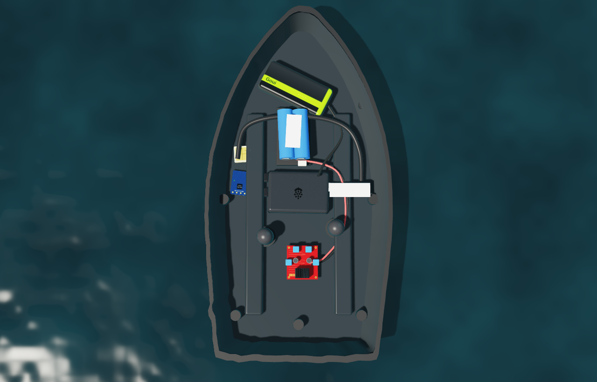
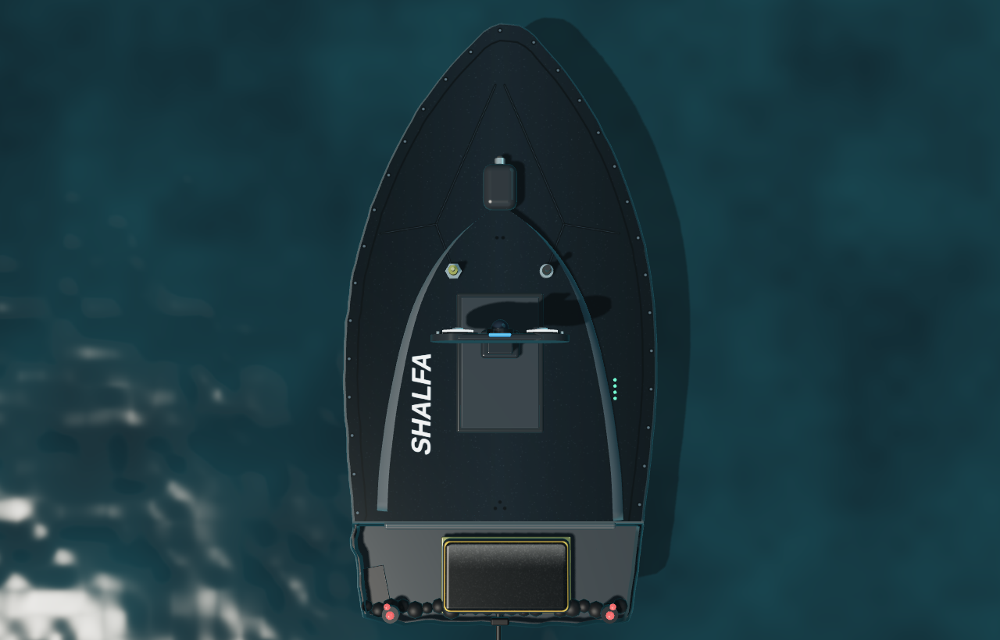

SHALFA شَلْفَا
نموذج أولي لقارب سطحي غير مأهولUnmanned Surface Vehicle Prototype
هندسة أنظمة بحرية ذكيةEngineering Intelligent Maritime Systems
شلفا نموذج أولي عامل لقارب سطحي غير مأهول، بُني بدمج التحكم المدمج والرؤية الحاسوبية والمراقبة الحرارية والوصول إلى GPS ومحاكاة المهمة الآمنة في منصة قارب تحكم عن بُعد تقليدية.SHALFA is a functional unmanned surface vessel prototype developed by integrating embedded control, computer vision, thermal monitoring, GPS access, and safe mission simulation into a conventional RC marine platform.


١١ · التواصل11 · Contact
تواصل سريعQuick Contact
اكتب اسمك وبريدك ورسالتك، وتصل مباشرة إلى فريق شلفا. كل الحقول مطلوبة، وتصلك نسخة من رسالتك على بريدك بعد الإرسال.Enter your name, email and message and it goes straight to the SHALFA team. Every field is required, and you receive a copy of your message by email after sending.
- يُقبل البريد من مزودين معتمدين فقط: Gmail وiCloud وOutlook وHotmail وYahoo وProton وغيرها من المزودين المعروفين.Only trusted email providers are accepted: Gmail, iCloud, Outlook, Hotmail, Yahoo, Proton and other well-known providers.
- لا تُرسل الرسائل الفارغة أو العشوائية.Empty or random text cannot be sent.